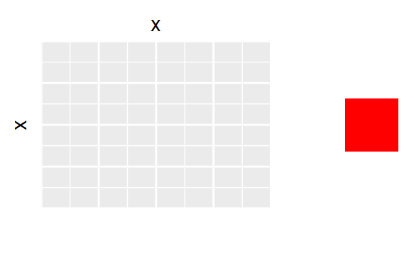
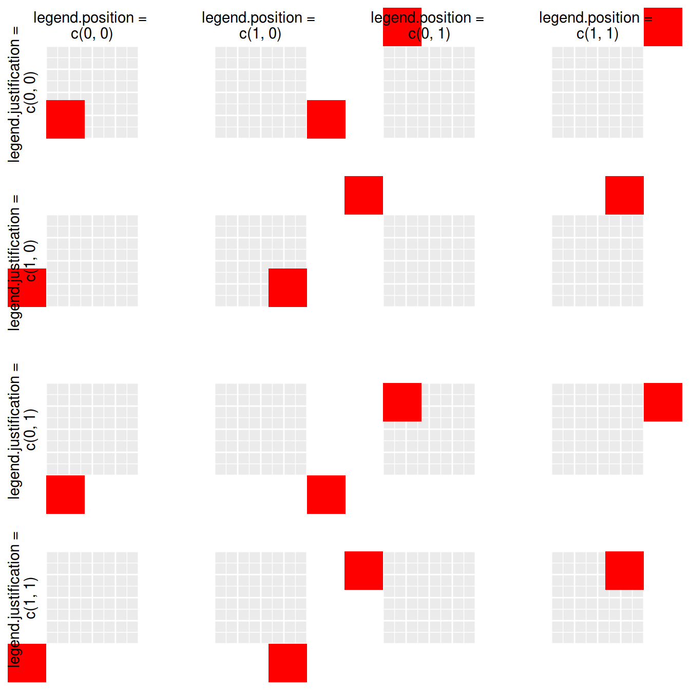
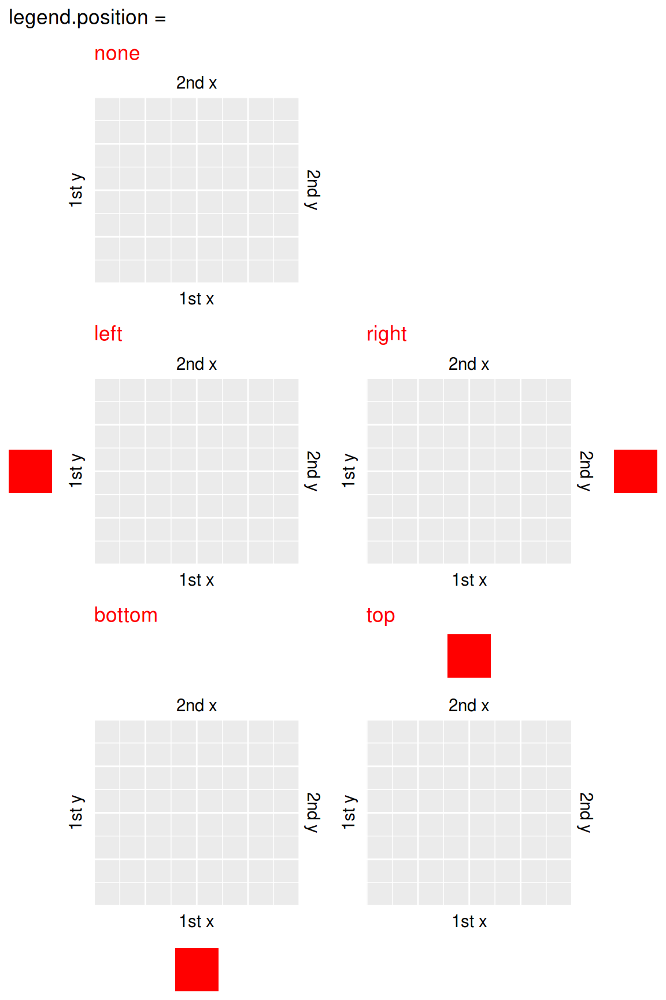
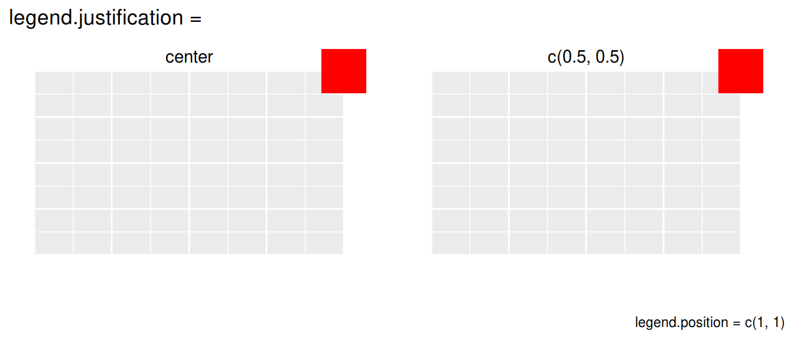

ggplot2のレジェンド位置を変えるには
Cookbookの Changing the position of the legend が参考になる．
要は theme() を使って
legend.position を長さ2の数値ベクトルないし"none" , "left" , "right" , "bottom" , "top" の文字列で与え，
legend.justification を長さ2の数値ベクトルないし"center" の文字列で与えれば
いいわけだが，早見表が欲しい．
Let’s try!
パッケージ
tidyverseからはggplot2の他にdplyr, purrrを使う． また，図を並べるためにはpatchworkを使う．
patchworkについては私のTokyo R 73での 発表スライド を参考にしてほしい．
library(tidyverse)
library(patchwork)基本となる図を用意
できるだけシンプルにするため，
- レジェンドは赤い長方形のみ
- プロットする点は非表示
- 軸目盛も非表示
にした．
更に，後々の見栄えの都合で
- x軸を上にする
- 第二x軸，第二y軸を作り，タイトルを空白の二行にする
といった変更を加えている．
g <- ggplot(data.frame(x=1), aes(x, x, color = 'a')) +
geom_point(alpha = 0) +
theme(
legend.background = element_rect(fill = 'red'),
legend.key = element_blank(),
legend.text = element_blank(),
legend.title = element_blank(),
axis.ticks = element_blank(),
axis.text = element_blank()
) +
scale_x_continuous(position = 'top', sec.axis = sec_axis(~., name = '\n')) +
scale_y_continuous(sec.axis = sec_axis(~., name = '\n'))
g
レジェンド位置を数値で指定する
legend.positionとlegend.justificationを0から1の範囲で変えてみる．
実用的なのは左上から右下までの対角線上の4つかな．
0から1以外の範囲を取ることも可能だが，表示領域外に飛び出すこともしばしばなので，扱い難い．
expand.grid(p1 = c(0, 1), p2 = c(0, 1), j1 = c(0, 1), j2 = c(0, 1)) %>%
mutate(r = rep(1:4, each = 4), c = rep(1:4, 4)) %>%
pmap(
function(p1, p2, j1, j2, r, c) {
list(
theme(legend.position = c(p1, p2), legend.justification = c(j1, j2)),
labs(
x = `if`(r != 1, '', paste0('legend.position = \nc(', p1, ', ', p2, ')')),
y = `if`(c != 1, '', paste0('legend.justification = \nc(', j1, ', ', j2, ')'))
)
)
}
) %>%
map(~ g + .x) %>%
wrap_plots(nrow = 4) 
expand.grid と purrr::pmap の組み合わせが大活躍．
ggplotではレイヤーのリストを足すことができるのも，凝ったことしたい時に覚えておくといいTipですね．
レジェンド位置を文字列で指定する
legend.position
には文字列で "none" , "left" , "right" , "bottom" , "top" を指定できる．
各軸の文字列とレジェンドが重ならないようにうまく配置してくれる．
レジェンドが見えないところへ飛んでいくこともない．
c("none", "left", "right", "bottom", "top") %>%
map(~ g + theme(legend.position = .x) + ggtitle(.x)) %>%
map(`+`, list(
scale_x_continuous(name = "1st x", sec.axis = sec_axis(~., name = "2nd x")),
scale_y_continuous(name = "1st y", sec.axis = sec_axis(~., name = "2nd y")),
theme(plot.title = element_text(color = "red"))
)) %>%
append(list(plot_spacer()), 1) %>%
wrap_plots(nrow = 3) +
plot_annotation('legend.position =')
purrr::map で図を沢山作りつつ， append を使って空白の図 ( patchwork::plot_spacer() )を挿入するのがキモ．
数値で相当するpositionを再現する方法は知らない．
legend.justification
には文字列で "center" を与えることができ，legend.justification = c(0.5, 0.5) に相当する．
wrap_plots(
g + theme(legend.position = c(1, 1), legend.justification = "center") + labs(x = "center", y = ""),
g + theme(legend.position = c(1, 1), legend.justification = c(0.5, 0.5)) + labs(x = "c(0.5, 0.5)", y = ""),
nrow = 1
) +
plot_annotation("legend.justification = ", caption = "legend.position = c(1, 1)")
Enjoy!
patchwork，便利……!